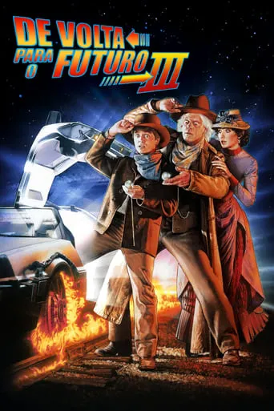
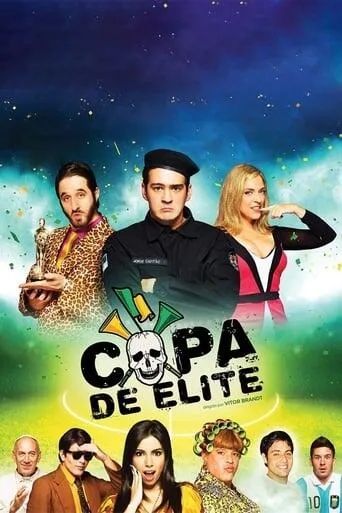
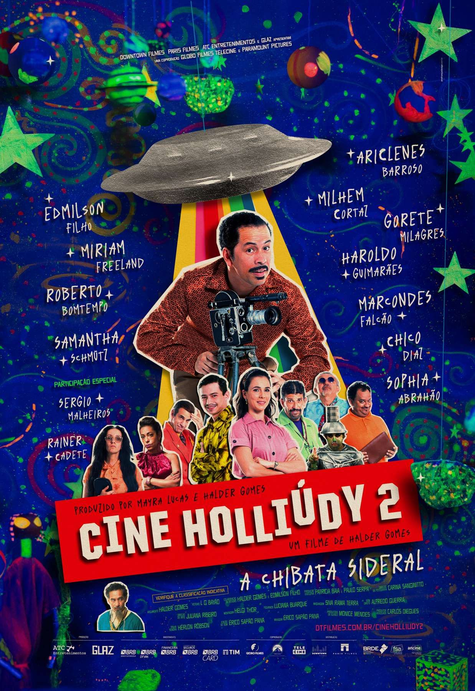
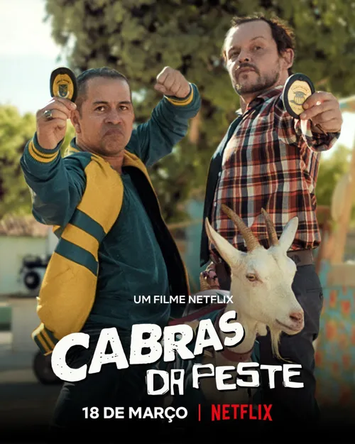
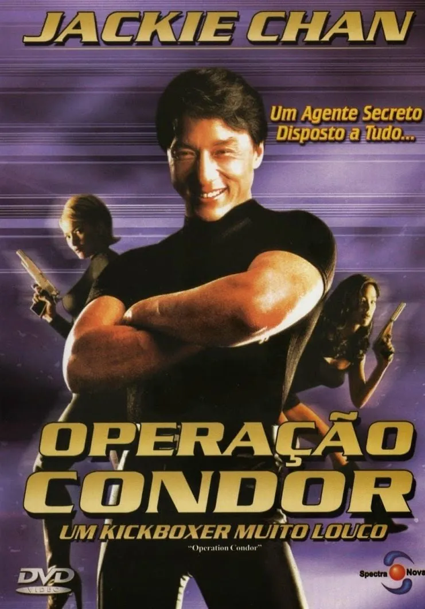
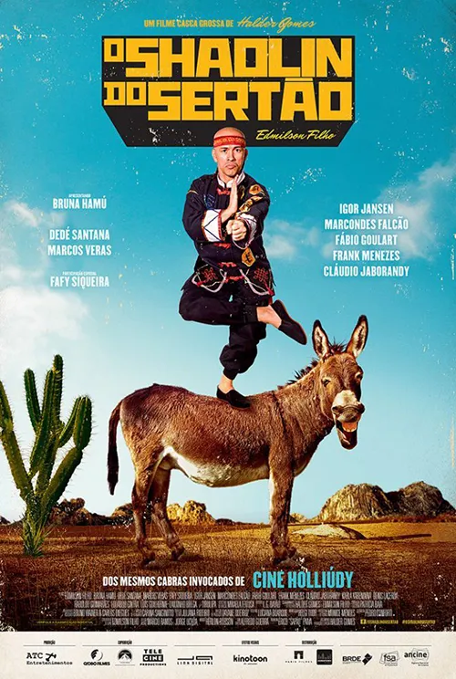

Lista de recomendação
|

Gênero: Ficção Científica, Aventura, Comédia Disponível em: Prime Video. |
NotasIMDB:7,4 Rotten Tomateos: critíca:81% Público:78% J&J:7,4 |
SinipseNeste capítulo final, Marty McFly (Michael J. Fox) obtém uma mensagem de 70 anos do Dr. que viaja no tempo. Emmett Brown (Christopher Lloyd), em que ele informa Marty que ele se aposentou para uma pequena cidade no Velho Oeste. Marty então descobre que o Doc foi assassinado logo após o envio da carta. A fim de salvar seu amigo, Marty terá que viajar de volta no tempo, separar um Doc apaixonado de uma escola local e reparar o DeLorean - tudo isso evitando um bando de pistoleiros. |
|
Review pessoalO terceiro filme da trilogia De Volta Para o Futuro traz uma mudança de cenário interessante, ao inserir Marty e Doc em uma ambientação de faroeste. Embora não tenha a mesma força e criatividade dos dois primeiros filmes, ele consegue encerrar a franquia de maneira satisfatória. A química entre Michael J. Fox e Christopher Lloyd continua brilhante, e os elementos de humor e aventura funcionam bem. As cenas no Velho Oeste têm um charme especial, trazendo nostalgia e diversão. É um desfecho digno para uma das melhores trilogias do cinema.Absolute 3 |
|

Gênero: Comédia, Ação Disponível em:Prime Video. |
Notas de outros sitesIMDB:4,1 J&J:7,5 |
SinipseEm uma paródia aos grandes sucessos do cinema nacional, Copa de Elite acompanha Jorge Capitão (interpretado por Marcos Veras), um policial famoso que é adorado pelo povo. Contudo, após salvar o maior rival da Seleção Brasileira em plena Copa do Mundo, ele acaba sendo considerado um traidor e tem sua vida virada de cabeça para baixo. Para limpar seu nome e impedir uma grande ameaça, Jorge embarca em uma missão cheia de situações absurdas, misturando comédia, ação e muitas referências a filmes como Tropa de Elite, Se Eu Fosse Você, Minha Mãe é uma Peça e outros clássicos do cinema brasileiro. |
|
Review pessoalCopa de Elite é uma sátira divertida e despretensiosa, que aposta em piadas rápidas, exageros e referências hilárias. O filme não se leva a sério em nenhum momento, o que é sua principal força, mas também seu ponto fraco para quem espera algo mais sofisticado. Marcos Veras entrega um bom protagonista, carismático e engraçado, e o elenco coadjuvante complementa bem as situações absurdas. É claramente inspirado em paródias americanas como Todo Mundo em Pânico, mas com um humor bem brasileiro, o que faz com que funcione melhor para o público nacional. Se você gosta de filmes que brincam com clichês e reviravoltas, Copa de Elite é uma boa escolha para rir sem compromisso. |

Gênero: Comédia Disponível em: Prime Video. |
Notas de outros sitesIMDB:6,5 Rotten Tomateos: Público:80% J&J:7,9 |
SinipseUm grupo de colegas de trabalho decide viajar para uma casa de praia durante o feriado, na expectativa de aproveitar dias tranquilos e relaxantes. No entanto, a viagem se transforma em um verdadeiro pesadelo quando eles descobrem que a casa alugada é um desastre, além de enfrentar uma série de problemas como brigas, calor intenso e situações absurdas. |
|
Review pessoalOs Farofeiros é uma comédia popular brasileira que aposta em situações cotidianas e no humor de identificação. O filme funciona bem ao capturar o caos e as confusões de uma viagem desorganizada, algo que muitas famílias brasileiras podem reconhecer. As piadas são simples, mas eficazes, e os personagens exagerados adicionam charme à história. É um filme leve e divertido, perfeito para rir das trapalhadas e dos conflitos que surgem em férias problemáticas. Um filme de comedia brasileira na paia, com a garota da Itaipava e da Bhrama. Pra que melhor? |
|

Gênero: Comédia Disponível em: Prime Video. |
Notas de outros sitesIMDB:7,1 J&J:8,1 |
SinipseEm uma pequena cidade no interior do Ceará, Francisgleydisson, um apaixonado por cinema, tenta salvar seu negócio em uma época em que a televisão começa a se popularizar e ameaçar os cinemas locais. Com muita criatividade, ele busca conquistar o público e manter a magia do cinema viva. |
|
Review pessoalCine Holliúdy é uma verdadeira homenagem à cultura nordestina e ao cinema. O humor regional e os personagens caricatos fazem com que o filme seja cativante e divertido. Edmilson Filho brilha no papel principal, trazendo carisma e muita leveza à história. Além de divertido, o filme também aborda a paixão pelo cinema e a luta para manter viva uma tradição em um mundo que está mudando rapidamente. |
|

Gênero: Comédia, Ação Disponível em: Netflix. |
Notas de outros sitesIMDB:6,3 J&J:8,3 |
SinipseA trama segue dois policiais de perfis completamente diferentes: Bruceuilis, um policial do interior do Ceará, e Trindade, um policial de São Paulo. Eles se unem para uma missão inusitada: resgatar Celestina, uma cabra considerada símbolo de uma cidade pequena. |
|
Review pessoalCabras da Peste é uma comédia de ação leve e muito divertida. O filme aposta no humor simples e na química entre Edmilson Filho e Matheus Nachtergaele, que formam uma dupla dinâmica hilária. A mistura do sotaque nordestino com a ambientação urbana traz uma originalidade especial, tornando o filme uma opção única no cinema brasileiro. É uma ótima pedida para quem busca uma comédia despretensiosa, mas com uma história criativa. |
|

Gênero: Ação, Comédia Disponível em: Prime Video |
Notas de outros sitesIMDB:7,2 Rotten Tomateos: Público:75% J&J:8,5 |
SinipseJackie Chan interpreta um aventureiro chamado Jackie que embarca em uma missão para encontrar um tesouro nazista perdido. Pelo caminho, ele enfrenta mercenários, inimigos poderosos e desafios perigosos em uma história cheia de ação e humor. |
|
Review pessoalEste é um clássico de Jackie Chan, com as acrobacias incríveis e o estilo único de comédia de ação que o tornaram famoso. As cenas de luta são impressionantes e bem coreografadas, combinando humor físico com sequências eletrizantes. O filme tem um ritmo leve e divertido, ideal para fãs de ação com uma pitada de humor.É o Jack Chan não tem como |
|

Gênero: Comédia, Ação Disponível em: Prime Video. |
Notas de outros sitesIMDB:6.7 J&J:,8 |
SinipseAluízio Li é um jovem do interior do Ceará que sonha em se tornar um mestre do kung fu. Quando uma trupe de lutadores chega à cidade, ele vê a chance de realizar seu sonho e provar que é digno do título de "Shaolin do Sertão". |
|
Review pessoalOShaolin do Sertão mistura humor regional com referências aos filmes de artes marciais. A atuação de Edmilson Filho é divertida, e o filme traz diálogos engraçados e situações absurdas que refletem bem o humor cearense. É uma comédia que valoriza a cultura nordestina de forma criativa e envolvente. |